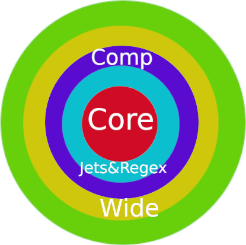

Inside Y2018.Text
...
Package dependencies
Basic dependencies of packages in Y2018.Text
- Core : depends only on Ada
standard packages
- (Testq,) Jets, Regex : depends
on Core, and must be constructed in this order
- Comp : precompiler Y2018Text, depends on Jets
and Regex
- Wide, (Testr) : must be
precompiled and depends on Jets and Regex
- M and anything else :
depends on Wide and must be precompiled

A quick look at some packages
Reader who want a more comprehensive knowledge about project
packages can study the source code.